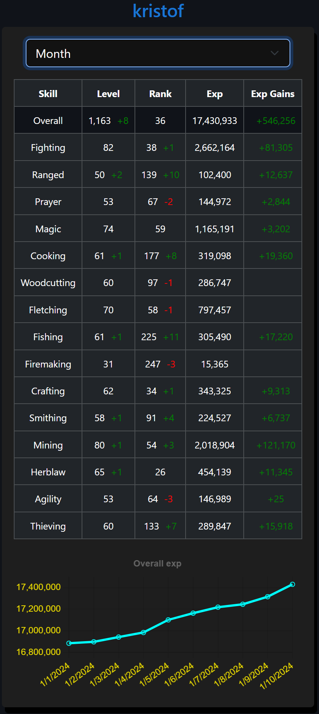
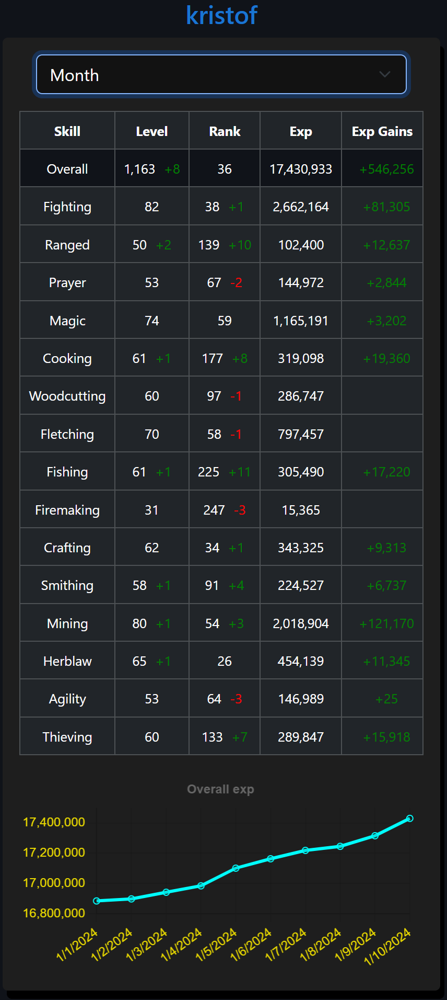

COMBAT
COMBAT SKILLS
SKILLS CHAMPS
CHAMPSChampion's Guild!
Lord Jolt has created a Highscores Tracking website similar to OSRS's WiseOldMan site
It can be found at https://championsguild.fi linked here



Lord Jolt has created a Highscores Tracking website similar to OSRS's WiseOldMan site
It can be found at https://championsguild.fi linked here
